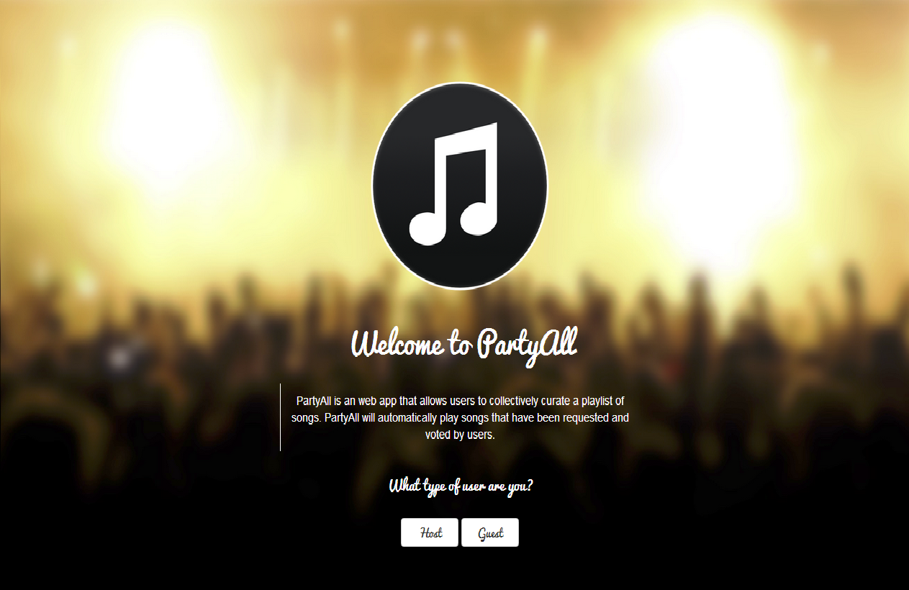
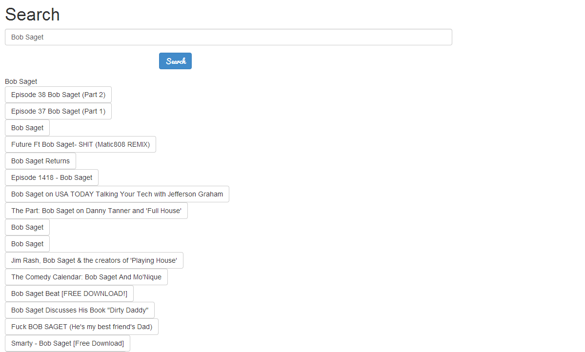

PartyAll Software Design Description
Version 0.7.0
Introduction
Purpose
This software design document describes how the requirements in the SRS will be achieved by detailing the architecture and system design of the PartyAll web application.
Scope
This document is written to aid the developers in designing this product.
Definitions
Concurrent Process |
Processes in the software that execute simultaneously and share common data and resources. |
View |
A visual element to display to the user; in this software it is normally in the form of a web page. |
References
IEEE. IEEE Std 1016-1998 IEEE Recommended Practice for Software Design Descriptions. IEEE Computer Society, 1998
CS312 - Sofware Engineering. Sofware Design Document for Electronic Scrolling Displays. TGR Karthik, 2006
Overview
This document is written following the guidelines of the IEEE Recommended Practice for Software Design Descriptions. It outlines the module, process, and data dependencies, as well as their detailed design and decomposition.
Decomposition Description
This section describes the decomposition of the system in three different forms:
- Cohesive modules are formed by grouping data and functions, which are then displayed in their corresponding class and package diagrams.
- Concurrent processes are extracted from the decomposition, and briefly outlined. In this case, as it is web-based, all served pages are considered concurrent processes
- The storage format of persistent data is identified.
Module Decomposition
Framework Packages Interactions
The design seperates the front end and back end. The back end was is referred to as PartyAll Service and the front end is is referred to as PartyAll App in the following diagrams.PartyAll Service Package
For more information on each APIPartyAll Model Class Diagram
PartyAll App Package Diagram
PartyAll App Views and Controllers Diagram
PartyAll App Services Diagram
Concurrent Process Decomposition
Home View
| Identification | ChooseUserTypeView |
|---|---|
| Purpose | An interface for the user to select whether to be a Host or a Guest. Also to inform the user about the App and what it does |
Login View: Host
| Identification | HostLoginView |
|---|---|
| Purpose | A login page for the Host, requesting the party key and the password |
Login View: Guest
| Identification | GuestLoginView |
|---|---|
| Purpose | A login page for the Guest, requesting the guest key |
Party View
| Identification | PartyView |
|---|---|
| Purpose | An interface for the host and users to search for, and vote on songs. Hosts will have additional controls of pause, play, and skip songs |
Search Song View
| Identification | SearchSongView |
|---|---|
| Purpose | A page displaying the search system to the user and its search results |
Data Decomposition
All persistent data is to be handled by the Google App Engine framework. The framework uses NoSQL datastore and uses SQL-like query language called GQL. Our partyAllService uses the Google App Engine to store the information. Our model is a kind of entity which includes the types and configuration for its properties. Read more about how Google App Engine stores its information.
Interface Description
Module Interface
HomeView
| Field | Type | Description |
|---|---|---|
| host-button | input button | Links user to the HostLoginView |
| guest-button | input button | Links user to the GuestLoginView |
HostLoginView

| Field | Type | Description |
|---|---|---|
| party-name | input text | The name of the party to create |
| party-password | input password | The password to the party |
| confirm party-password | input password | The confirmed password to the party |
| create-button | input button | Creates the party |
| party-key | input text | The key of an existing party |
| party-password | input password | The password to the party |
| login-button | input button | Signs into the party |
HostCreateSuccessView
| Field | Type | Description |
|---|---|---|
| party key | p | The party key for the party that was created |
| continue-button | input button | Allows the user to continue to the party |
GuestLoginView

| Field | Type | Description |
|---|---|---|
| guestkey | input text | The guest key for the room to log into |
| submit-button | input submit | Guest attempts to log into the room by the specified access key. Redirects to PartyView if successful |
HostPartyView
| Field | Type | Description |
|---|---|---|
| song-button | input button | Brings up a modal menu with the options to vote,Play/pause, or cancel |
| vote-button | input button | Text displays "upvote" if it hasn't been voted for, unvote if it has. Votes or unvotes the current song |
| play-button | input button | Instantly plays the currently selected song, stopping the previously played one |
| search-button | anchor | Redirects to SearchSongView |
GuestPartyView

| Field | Type | Description |
|---|---|---|
| song-button | input button | Upvotes the selected song if not already upvoted by user, downvotes otherwise |
| search-button | input button | Redirects to SearchSongView |
SearchSongView
| Field | Type | Description |
|---|---|---|
| search-field | input text | The name of the song to search for |
| search-button | input submit | Searches for the specified song |
Detailed Design
Module Detailed Design
This section describes the module design detail. For each interface and internal function implemented by a module or process it describes the steps followed to get from input to output using high level pseudocode. This pseudocode can be easily refined further and translated into actual code at the implementation stage.
nextSong()
- Stop currently playing song
- Identify next song to play in the queue
- Change nowPlaying to the new song
- Return the new Song object
vote(user: User)
- Search list of user IDs
- Determine if voter is already in list
- If not, add voter to list
unvote(user: User)
- Search list of user IDs
- Determine if voter is already in list
- If so, remove voter from list
AddSong(song: Song)
- Check if song is in already been added
- Add song to the list of songs if not present
AddUser(user: User)
- Check if user is in already been added
- Add user to the list of users if not present
GuestLogin
- User enters party key
- System checks if party key belongs to a party that exists
- If party key is valid, assigns unique guest ID to user and takes to GuestPartyView page
HostLogin
- Host enters password and party key
- System checks if password and party key match
- If password and party party match, assigns host ID and takes host to HostPageView page
Documentation
Front End
Languages: HTML, CSS, Javascript
Iconography:
Made in Pixelmator
Visual Framework:
BootstrapThe visual framework the PartyAll web application is utilizing is Bootstrap made by the people at Twitter. Bootstrap is a featureful, mobile first framework that is easy to use. Bootstrap is a widely used framework with an array of features ranging from numerous custom HTML and CSS components to page transitions.
The pros of Bootstrap are that it is very easy to use, fully featured, and customizable. The downsides to Bootstrap are that it is a relatively large web file because of its large feature set. Developers need to consider the loading time of Bootstrap when deciding to use it.
Web Application Framework:
AngularJSThe web application framework PartyAll utilizes is AngluarJS. AngularJS is an open-source web application framework maintained by Google. AngularJS’s main goal is to help create fast, dynamic, single page web applications that only require client side HTML, CSS and Javascript.
Traditional web pages work in the following way, a web browser makes a URL request to a server (web server) and the web server responds back with the webpages and other assets (the HTML, and Javascript), and then the browser would load up the entire web page. When a user clicks on another link, a new request is initiated and the whole process is repeated with a different set of web pages and assets returned back from the web server. With AngularJS when a user clicks on a link, instead of the web server responding with entire webpages and the browser needing to reload the entire page, the web server only responds back with the data needed. This allows the browser to simply load the data into the existing page and update it without the need for the browser to reload.
Back End
Languages: Python
Service (Both datastore, and server):
Google App EngineGoogle App Engine is a full platform used as a service to build scalable cloud applications and backends on Google’s infrastructure. App Engine is equipped with a datastore to store information, memecache to greatly reduce the speed of repeatedly accessed data, and has the ability to handle runtime logic so that you can create handlers for various types of requests. App Engine is also equipped with a tasks API with allows you to run work in the background allowing clients to rest as the server does all the work. Google App Engine allows for RESTful APIs and cross origin requests.
The advantage of App Engine is that it is very fast, scalable and can handle a lot of the work that would otherwise have to be done manually (such as determining how to store data, making the data available across the world etc).
The disadvantages of Google App Engine is that it takes a while to learn. There is a learning curve when starting to use Google App Engine since it is not a tradtional relational database. It takes time to learn about their GQL language and how to use datastore API to interact with the data. Another disadvantage is a layer of Google abstraction which can make it more difficult to understand the interaction between partyAllApp and the partyAllService. One major disadvantage of Google App Engine is its lack of support for websockets. The Google App Engine alternative solution is Channel which has limits on resources such as number of calls and number of channels.
Cryptography/Security:
Library: PyCryptoEncryption Type: RSA